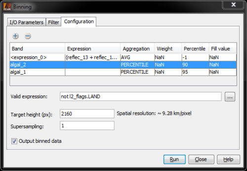
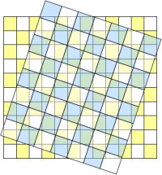

| Level 3 Binning Operator |
|
Using the I/O Parameters tab, the input products can be set, as well as the target product's name and target directory. See the screenshot below.

When the Run-button is clicked, the binning is performed according to the preferences that are specified in the "Filter-" and the "Configuration"-tabs.
Two filters can be applied to limit the contents of the target product. See the screenshot below for the user interface for the filters.

The target region filter can be used to set the bounds of the target product. It is able to operate in four different modes:
The temporal filter can be used in order to specify time bounds the source products have to comply with. Source products that are not within these time bounds are not considered for level-3 generation. If the filter shall be used, both a start date and an end date must be supplied. The following rules apply:

Using the table, the user can specify the bands that shall appear in the target product. Using the plus and
minus buttons, bands can be added and removed.
Each row in the table determines one or multiple output bands, depending on the aggregation method being chosen. If,
for example, the aggregation method AVG (average) is chosen in the third column, the target product will contain two
bands written by this output method: 1) the mean, 2) the standard deviation.
In the first column, bands can be chosen. Either bands that are contained in the products the user entered in the
IO Parameters tab can be chosen, or band math expressions can be set by choosing the band
<expression_x>. In the latter case, a band maths expression can be entered in the second column, so that e.g.
simple algorithms such as NDVI can be computed on-the-fly.
The weight and percentile columns are used only for specific aggregation methods.
See the following table on valid input for the standard aggregators:
| Aggregator | Description | Weight | Percentile |
| PERCENTILE | An aggregator that computes the p-th percentile. | not considered | integer value between 0 and 100 |
| AVG_ML | An aggregator that computes a maximum-likelihood average. | any float value, not NaN | not considered |
| AVG | An aggregator that computes a maximum-likelihood average. | any float value > 0.0, not NaN | not considered |
| MIN_MAX | An aggregator that computes the minimum and maximum values. | not considered | not considered |
| ON_MAX_SET | An aggregator that sets an output if an input is maximal. | not considered | not considered |
The fill value can be set for all aggregation methods -- this is the value being set to the pixel if the aggregation method yields no sensible value. This might happen if no valid source pixels are found for the pixel.
Using the valid expression, the user can specify which values in the source products shall be considered. Thus, a
boolean expression has to be set here. In the configuration of the example screenshot, only pixels that are not over
land are considered.
The target height of the source product may be set, too; this value has direct influence on the spatial resolution.
As long as the area of an input pixel is small compared to the area of a bin, a simple binning is sufficient. In this case, the geodetic center coordinate of the Level 2 pixel is used to find the bin in the Level 3 grid whose area is intersected by this point. If the area of the contributing pixel is equal or even larger than the bin area, this simple binning will produce composites with insufficient accuracy and visual artifacts such as Moiré effects will dominate the resulting datasets.
The following figure illustrates this problem.

Level 2 grid (blue) and Level 3 grid (yellow)
The blue chessboard grid refers to the input data, the yellow one refers to the final Level 3 grid. As the figure clearly shows, single Level 2 pixels cannot be uniquely be assigned to single bins.
Supersampling parameter can be used to reduce or avoid the Moiré effect. The Moiré effect usually occurs when the spatial resolution used for the binning is similar to or smaller than the input pixel resolution. The supersampling subdivides every input pixel to n x n subpixels which all have the same values but different and unique geographical coordinates. This way, an input pixel may be distributed to more than one adjacent bin cell.
It is not only possible to write a target product in the standard format (that is, the binned data is mapped on a rectangular lat/lon grid), but also to a NetCDF file whose contents are in compliance with the NASA Ocean Colour Level-3 binned data products, as described here.